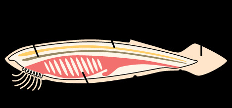

四、脊椎动物亚门（有头类）概述
脊椎动物亚门是脊索动物门中最高等的类群，脊索被脊柱所取代，出现明显的头部（脑化），故又称有头类（Craniata）。下分7纲：圆口纲、软骨鱼纲、硬骨鱼纲、两栖纲、爬行纲、鸟纲、哺乳纲。
与原索动物（无头类）相比，脊椎动物在神经、支持、摄食、运动、呼吸、排泄、循环等系统上均出现重大进步。

（一）脊椎动物亚门的一般特征（7大特征，必背）
1. 发达而集中的神经系统：神经管前端膨大部分分化出脑，以及嗅、视、听等感觉器官，并加以头骨保护，因而出现明显的头部——故脊椎动物又称有头类。脑后神经管分化出脊髓，由椎管保护。
2. 脊柱代替脊索：绝大多数种类中，脊索只见于胚胎早期，以后被脊柱所代替。脊柱保护脊髓，前端发展出头骨保护脑。
3. 具有上、下颌：除圆口类外，脊椎动物出现上下颌，能主动摄食以提高营养。
4. 成对的附肢：除圆口类外，脊椎动物出现成对附肢，但不超过2对（成对的偶鳍/四肢）。
5. 用鳃或肺呼吸：原生水生种类（如鱼）以鳃呼吸；次生水生种类（如鲸）和陆生种类只在胚胎期出现鳃裂，成体以肺呼吸。
6. 出现集中的肾脏：集中的、结构复杂的肾脏代替分节排列的肾管，提高了排泄能力。
7. 肌肉质的心脏：肌肉质的有搏动功能的心脏代替腹大动脉，加强了体内运输能力。
| 纲 | 脊索/脊柱 | 颌 | 附肢 | 呼吸 | 生境 |
|---|---|---|---|---|---|
| 圆口纲 | 脊索终生存在，出现雏形椎骨 | 无颌 | 无成对附肢 | 鳃（鳃囊） | 水生 |
| 软骨鱼纲 | 脊柱取代脊索 | 有颌 | 偶鳍 | 鳃 | 水生 |
| 硬骨鱼纲 | 脊柱取代脊索 | 有颌 | 偶鳍 | 鳃（鳔辅助） | 水生 |
| 两栖纲 | 脊柱分颈椎/躯干椎/荐椎/尾椎 | 有颌 | 五趾型四肢 | 幼体鳃，成体肺+皮肤 | 水生→陆生 |
| 爬行纲 | 脊柱分区明显（颈胸腰荐尾） | 有颌 | 五趾型四肢 | 肺 | 真正陆生 |
| 鸟纲 | 脊柱颈椎多枚，多愈合 | 有颌（喙） | 前肢为翼 | 肺+气囊（双重呼吸） | 陆生（飞行）恒温 |
| 哺乳纲 | 脊柱颈椎恒为7枚 | 有颌 | 四肢发达 | 肺 | 陆生为主恒温 |
（二）脊椎动物的基本结构与功能（系统概述）
1. 外形
脊椎动物具两侧对称的身体，典型身体可区分为头部、颈部、躯干部和尾部。
- 头部明显，集中脑、眼、鼻、耳及上下颌口器。
- 颈部是陆生脊椎动物的特征，增加头部运动灵活性；水栖动物无颈，两栖类颈部不明显。
- 躯干部一般有成对附肢（圆口类、蛇类除外）。
- 尾部以肛门为界（肛后尾）；水生发达（运动器官），陆生多退化（蛙、类人猿尾退化）。
2. 皮肤及其衍生物
脊椎动物皮肤由表皮（复层扁平上皮，最浅层为基底层/生发层）和真皮构成。衍生物分四类：
- 表皮衍生物：鱼类/蛙类黏液腺、爬行类角质鳞甲、鸟类羽毛、哺乳类毛发、爪蹄指甲角、皮肤腺。
- 真皮衍生物：哺乳类多数角、硬骨鱼各种鳞片。
- 皮肤（表皮+真皮）共同衍生物：哺乳类牙齿、盾鳞。
- 皮肤色素细胞：使皮肤呈多种颜色，常见于鱼类和两栖类。
3. 骨骼系统
脊椎动物骨骼均为内骨骼（中胚层来源），具支持和造血功能，分为两大部：
- 中轴骨骼：头骨、脊柱、肋骨、胸骨。
- 头骨 = 脑颅 + 咽颅（咽弓）；枕髁1～2个与椎骨相连。
- 椎体类型：双凹型（鱼类）、前凹型（无尾两栖、蜥蜴）、异凹型（鸟颈椎，最灵活）、双平型（哺乳类，有椎间盘）。
- 脊柱分区：鱼类2种（躯干椎、尾椎）→两栖类4种（颈、躯干、荐、尾）→爬行及以上5种（颈、胸、腰、荐、尾）。
- 胸廓：爬行类以上由脊柱+肋骨+胸骨构成，保护心肺、协助呼吸；两栖类无肋骨。
- 附肢骨骼：带骨 + 肢骨。肩带（肩胛骨、乌喙骨、锁骨）+ 腰带（髂骨、坐骨、耻骨）。鱼类偶鳍鳍条可认为是四肢骨的前身。
4. 消化系统
包括消化道（口腔、咽、食道、胃、肠、泄殖腔）和消化腺，由胚胎期原肠发育形成。原肠依形态分前肠、中肠、后肠。
牙齿（从鱼类开始有真正牙齿）：按着生方式分端生齿、侧生齿、槽生齿；按分化分同型齿/异型齿；按更换分多出齿/再生齿。圆口类为角质齿（外胚层表皮形成）。哺乳类为再生异型槽生齿。
口腔腺：圆口类有特殊口腔腺（分泌物使寄主血液不凝固）；鱼类无；两栖类开始有；陆生种类唾液腺发达（适应陆生）。
胃：鸟类分腺胃和肌胃；哺乳类多为单胃，反刍类有4室复胃。肠：十二指肠、小肠、大肠、直肠，小肠大肠交界处有盲肠（草食性发达）。
肛门/泄殖腔：圆口类、软骨鱼类、胎盘类哺乳类肛门独立；软骨鱼以外的鱼、两栖、爬行、鸟、单孔类有泄殖腔（粪尿生殖共口）。
5. 呼吸系统
原生水生种类以鳃呼吸，陆生种类以肺呼吸。咽鳃裂在陆生种类仅见于胚胎期。两栖类成体兼用肺和皮肤呼吸；爬行类以上肺呼吸完善，出现胸廓协助呼吸；鸟类有气囊实现双重呼吸。
6. 循环系统（心脏与动脉弓演化，重点）
心脏演化（核心考点）：
- 圆口类、鱼类：一心房一心室 + 静脉窦 + 动脉圆锥（软骨鱼/圆口类）或动脉球（硬骨鱼），单循环，心腔内全为缺氧血。
- 两栖类：二心房一心室，不完全双循环（左房动脉血、右房静脉血、心室混合血）。
- 爬行类：二心房二心室（室间隔不完全，鳄类近完全），不完全双循环。
- 鸟类、哺乳类：二心房二心室，完全双循环，动静脉血完全分开。
动脉弓演化（原始6对）：两栖类第3对→颈动脉、第4对→体动脉弓、第5对消失、第6对→肺动脉；爬行类保留左右体动脉弓；鸟类左体动脉弓消失（保留右）；哺乳类右体动脉弓消失（保留左）——鸟兽体动脉弓左右相反，是经典考点。
静脉与门静脉：肝门静脉从圆口类开始出现；肾门静脉鱼类至两栖爬行发达，鸟类退化，哺乳类消失（仅保留肝门静脉）。
7. 排泄系统（肾脏演化，重点）
脊椎动物肾脏发生经历三个时期，反映进化过程：
- 前肾：体腔前部，最原始，前肾小管。少数圆口类终生存在，鱼/两栖幼体存在；一切脊椎动物胚胎期都有。输尿管为前肾管。
- 中肾：前肾后方，体腔中部。鱼类和两栖类成体的排泄器官。前肾管→中肾管；雄性中肾管兼输精。
- 后肾：中肾后方，体腔后部，最高级。存在于爬行、鸟、哺乳类（羊膜类）。输尿管由中肾管基部突起形成；雄性中肾管特化为专门的输精管。
圆口类、软骨鱼、鸟类和部分爬行类无膀胱。
8. 生殖系统
由生殖腺和生殖管道组成，一般雌雄异体。雌性卵成熟后排入体腔再经输卵管排出。中肾管在雄性中兼输精功能，羊膜动物中肾退化后中肾管成为专门输精管。
生殖管道与尿道开口方式三类：泄殖腔（软骨鱼、两栖、爬行、鸟、单孔类）、泄殖窦（圆口类、硬骨鱼、胎盘类哺乳类）、分别独立开口（灵长类雌性）。
9. 神经系统（脑的演化，重点）
神经系统分中枢（脑+脊髓）、周围（脑神经+脊神经）和植物性神经。脑神经：非羊膜类10对、羊膜类12对。脊神经有背腹根之分。
脑的发育：神经管前端膨大分化为三个脑泡——前脑、中脑、菱脑。继续分化：前脑→端脑（大脑）+间脑；中脑→视叶；菱脑（后脑）→小脑+脑桥+延髓。
脑分为五部：端脑（大脑）、间脑、中脑、后脑（小脑+脑桥）、延脑。
大脑皮层演化：原始大脑仅白质+纹状体+古脑皮（嗅觉）；鱼仍以嗅觉为主；两栖类出现原脑皮；爬行类出现新脑皮（新皮质）——感觉运动最高控制中心；鸟类大脑皮层平滑无沟回，高级中枢位于纹状体区（现称上皮层/皮层）；哺乳类新皮质发达，表面形成沟回，原皮质被挤入成为海马体。
脑进化总趋势：大脑日益发达，小脑越来越重要，中脑相对变小。最早中脑最重要→丘脑发展取代中脑→新皮质取代丘脑中脑成为最高控制中心。
10. 感觉器官（补充）
- 听觉器（耳）：由半规管、前庭（平衡）和耳蜗（听觉）组成。圆口类和鱼类只有内耳；两栖类出现中耳；爬行类开始有外耳。
- 视觉器（眼）：各类脊椎动物均具有。
- 嗅觉器与味觉器：嗅觉器位于鼻腔感觉上皮；味觉器分布于圆口类头部体表、鱼类全身表面、哺乳类主要在舌部。
本节小结
1. 脊椎动物亚门 = 有头类：脊索被脊柱取代、出现明显头部，分7纲。
2. 7大一般特征：发达集中神经（脑+头骨）、脊柱代脊索、上下颌（圆口除外）、成对附肢≤2对（圆口除外）、鳃或肺呼吸、集中肾脏、肌肉质心脏。
3. 椎体4类型（双凹/前凹/异凹/双平）；脊柱分区2→4→5；胸廓自爬行类起完整。
4. 心脏：1房1室(鱼)→2房1室(两栖)→2房2室(爬/鸟/哺)，单循环→不完全双循环→完全双循环。
5. 动脉弓：鸟保留右体动脉弓、哺乳保留左体动脉弓。
6. 肾脏：前肾(胚胎/无羊膜幼体)→中肾(鱼两栖成体)→后肾(羊膜类成体)；雄性中肾管→输精管。
7. 脑五部：端脑/间脑/中脑/后脑/延脑；脑皮演化：古脑皮→原脑皮→新脑皮。
8. 圆口纲是7纲中最原始者：无颌、无成对附肢、脊索终生存在，下一节详述。